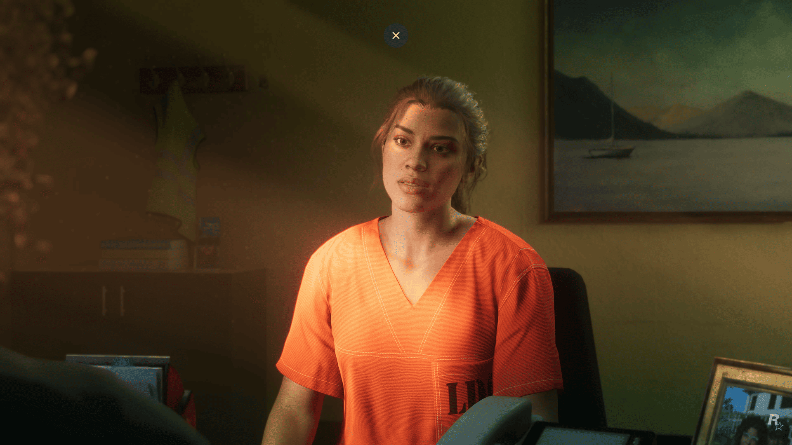

Эффект домино: релиз Grand Theft Auto VI обрушил онлайн Call of Duty более чем на 40%
Выход главного блокбастера десятилетия вызвал беспрецедентный отток аудитории из крупнейших сервисных игр, включая Call of Duty и Fortnite.
Аналитики зафиксировали мощнейшее влияние релиза Grand Theft Auto VI от Rockstar Games на всю игровую экосистему. Согласно отчету портала IGN со ссылкой на данные аналитических агентств, количество активных игроков в Call of Duty от Activision сократилось более чем на 40% в первые же дни после выхода криминального экшена. Этот спад затронул как консольные версии, так и ПК-сегмент, подтверждая статус новой части GTA как главного культурного феномена, способного перетянуть на себя внимание аудитории даже самых стабильных франшиз.
Эксперты из Bank of America, чьи прогнозы приводит GameSpot, пошли еще дальше, заявив, что будущая интеграция GTA Online по своим масштабам и выручке может превзойти успех Fortnite. Несмотря на локальные технические шероховатости, такие как проблемы с калибровкой HDR и редкие графические глитчи, игроки массово покидают привычные шутеры ради исследования Леониды. Аналитики подчеркивают, что подобный резкий отток пользователей из ежегодных блокбастеров является аномальным для индустрии и заставляет конкурентов экстренно пересматривать свои маркетинговые планы.
Исторически релизы Rockstar Games всегда сопровождались временным затишьем на рынке, однако текущие показатели превосходят запуск Red Dead Redemption 2 и даже оригинальной Grand Theft Auto V. Ранее Sony официально подтвердила, что запуск шестой части стал самым масштабным в истории PlayStation, собрав почти 40 миллионов игроков за считанные дни. Сравнение с конкурентами наглядно демонстрирует, что даже устоявшиеся лидеры жанра live-service игр не способны удерживать базу пользователей в условиях выхода столь ожидаемого открытого мира.
Игровая индустрия вступила в фазу «пост-релизного шока», где успех одного проекта диктует условия выживания для всех остальных крупных издателей. Для рядовых игроков это означает не только опустение серверов в привычных онлайн-проектах, но и потенциальную волну внеплановых контентных обновлений от конкурентов, стремящихся вернуть внимание аудитории. В ближайшие месяцы рынок будет адаптироваться к новой реальности, в которой Grand Theft Auto VI стала центральной точкой притяжения игрового трафика.
Источники: IGN, GameSpot, PC Gamer.